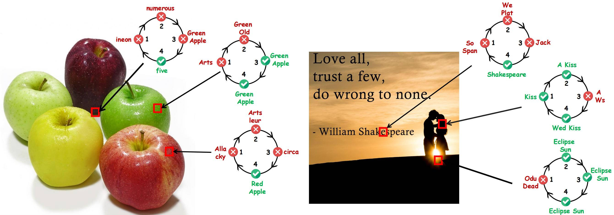
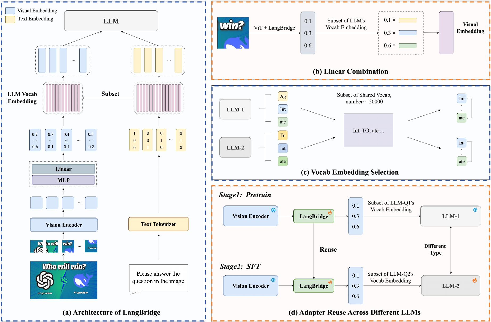

We propose LangBridge, an interpretable vision-language adapter that grounds visual semantics in LLM language priors through linear combinations of vocabulary embeddings. Our contributions can be summarized as follows:
🔍 Explainable Analysis for Visual-Language Alignment
We provide a systematic study of the learning process of MLP adapters in Visual-Language alignment.
🔧 Novel Adapter
We introduce LangBridge, a novel adapter that transforms the visual features into visual embeddings by decomposing them into linear combinations of the LLM's vocabulary embeddings.
🔄 Pretraining-Free Transfer
LangBridge enables pre-training-free reuse between different large language models, significantly reducing the cost of pretraining.
1OpenGVLab, Shanghai AI Laboratory,2The Chinese University of Hong Kong, 3Tsinghua University,4SenseTime Research,5Shanghai Jiao Tong University, 6Peking University,7PengCheng Laboratory,8Chongqing University
*Equal contribution
Background
Recent years have witnessed remarkable advances in Large Vision-Language Models (LVLMs), which have achieved human-level performance across various complex vision-language tasks. Following LLaVA's paradigm, mainstream LVLMs typically employ a shallow MLP for visual-language alignment through a two-stage training process: pretraining for cross-modal alignment followed by instruction tuning. While this approach has proven effective, the underlying mechanisms of how MLPs bridge the modality gap remain poorly understood. Although some research has explored how LLMs process transformed visual tokens, few studies have investigated the fundamental alignment mechanism. Furthermore, the MLP adapter requires retraining whenever switching LLM backbones.
Contribution
We propose LangBridge, an interpretable vision-language adapter that grounds visual semantics in LLM language priors through linear combinations of vocabulary embeddings. Our contributions can be summarized as follows:
1. Explainable Analysis for Visual-Language Alignment: We first investigate the working principles of MLP adapters and discover that they learn to project visual embeddings into subspaces spanned by corresponding text embeddings progressively.
2. Novel Adapter: Based on this insight, we propose LangBridge, a novel adapter that explicitly maps visual tokens to linear combinations of LLM vocabulary embeddings.
3. Pretraining-Free Transfer: This innovative design enables pretraining-free adapter transfer across different LLMs while maintaining performance.
Validation
Our experimental results demonstrate that a LangBridge adapter pre-trained on Qwen2-0.5B can be directly applied to larger models such as LLaMA3-8B or Qwen2.5-14B with minimal performance degradation. Overall, LangBridge enables interpretable vision-language alignment by grounding visual semantics in LLM language priors, while its plug-and-play design ensures efficient reuse across multiple LLMs with minimal performance loss.
Explainable Analysis for Visual-Language Alignment

Figure 1:Progressive semantic alignment in MLP adapters across training stages. Circular graphs demonstrate the evolution of visual-text token associations through four training phases (Pretrain-100, Pretrain-1000, Pretrain-2000, and Final-SFT).
In this section, we conduct a comprehensive analysis of how MLPs bridge the modality gap through two aspects:
To understand how visual semantics are encoded in transformed embeddings, we analyze the relationship between visual embeddings and text embeddings through cosine similarity: As shown in Figure 1, visual embeddings exhibit strong correlations with semantically related text tokens. For example, image patches of red apples show high similarity to tokens like 'red' and 'Apple'. Moreover, some image tokens convey global information, for instance, '5,' which refers to the number of apples. This result demonstrates that visual embeddings are within the LLM's text embedding space through the MLP mapping, and are particularly close to their semantically related text embeddings.
Cross-Modal Alignment Learning Process
To investigate the development of cross-modal alignment capabilities, we conduct a temporal analysis across different training stages:
Pretrain-100 steps
Pretrain-1000 steps
Pretrain-2000 steps
Final SFT
Our analysis reveals that MLPs undergo a progressive learning process in which they:
Gradually refine the projection of visual features into relevant text embedding subspaces
Finally achieve robust semantic alignment between modalities
This evolutionary process is clearly demonstrated in Figure 1, where we observe increasing semantic alignment strength and precision as training progresses. These results support our hypothesis that MLPs gradually develop their projection capabilities, incrementally learning to map visual features into regions close to the subspace spanned by their corresponding text embeddings. Building upon this insight, we introduce an explicit transformation approach called Language Basis Vector Projection. This approach explicitly projects visual features into the text embedding subspace of the LLM by representing them as linear combinations of the LLM's vocabulary embeddings.
Method

Figure 2:Overview of LangBridge architecture and workflow.
In this section, we introduce LangBridge, a novel adapter that translates visual features into the language model's embedding space based on the Language Basis Vector Projection Theory. Our key insight is to decompose visual features into linear combinations of the LLM's vocabulary embeddings, enabling seamless integration with different LLM architectures. First, we present the core architecture of LangBridge (Section 3.1), which operates by extracting visual features from images and projecting them into probability distributions over the LLM's vocabulary space. These distributions are then used to construct visual tokens as weighted combinations of text embeddings. Finally, we explain how the pretrained LangBridge can be seamlessly reused across different LLM architectures without retraining (Section 3.2).
Novel Adapter
Architecture of LangBridge We present the architecture of LangBridge, a novel
vision-language adapter based on the Language Basis Vector Projection Theory. As illustrated in Figure 2, the
framework operates through three stages:
Stage 1: Visual Feature Extraction.
Given an input image \(\mathcal{I} \in \mathbb{R}^{H \times W \times 3}\), we employ a Vision Transformer to extract patch-aligned visual features:
\[\{v_i\}_{i=1}^N = \text{ViT}(\mathcal{I}), \quad v_i \in \mathbb{R}^D \tag{1}\]
where \(N = \frac{HW}{P^2}\) denotes the number of image patches with patch size \(P\).
Stage 2: Probability Computation.
After acquiring the visual features, we transform them into visual tokens and align them with the LLM's text embedding space. This process is carried out by
decomposing the visual features into linear combinations of the LLM's vocabulary embeddings. We first apply a two-layer MLP to project the visual features into the LLM's text embedding
space. Let \(\mathbf{v}\) represent the visual feature. The projection is given by:
\[\mathbf{v}_{\text{proj}} = \text{MLP}(\mathbf{v}) \tag{2}\]
where \(\mathbf{v}_{\text{proj}} \in \mathbb{R}^D\), and \(D\) is the dimensionality of
the text embeddings. Next, we append a linear layer \(\mathbf{W} \in \mathbb{R}^{T \times D}\), where \(T\) is the
vocabulary size of the LLM, to produce the probability distribution \(\mathbf{p}\), matching the LLM's vocab size:
\[\mathbf{p} = \mathbf{W} \cdot \text{MLP}(\mathbf{v}) \tag{3}\]
Stage 3: Linear Combination of Text Embeddings.
Once we have the probability distribution \(\mathbf{p}\) from Equation (3), the visual features are represented as a weighted combination of the LLM's
text embeddings. The probability distribution \(\mathbf{p}\) serves as the coefficients for a linear combination of
the LLM's vocabulary embeddings \(\mathbf{e}_i\), where each \(\mathbf{e}_i \in \mathbb{R}^D\) is a text embedding of the
\(i\)-th token in the vocabulary. Specifically, the visual tokens \(\mathbf{v}_{\text{tokens}}\) are obtained as
follows:
\[\mathbf{v}_{\text{tokens}} = \sum_{i=1}^T p_i \mathbf{e}_i \tag{4}\]
where \(p_i\) is the \(i\)-th component of the probability distribution \(\mathbf{p}\), and \(T\) is the vocabulary size of the LLM.
The resulting vector \(\mathbf{v}_{\text{tokens}} \in \mathbb{R}^D\) represents the final visual token, which aligns with the LLM's text
embedding space.
Pretraining-Free Transfer
A key feature of LangBridge is its ability to be seamlessly reused across different LLM architectures after being pretrained. As illustrated in Figure 2, this reuse mechanism consists of two stages:
Stage 1: Pretrain.
During the pretraining stage, we first extract image features through the Vision Encoder, then use LangBridge to learn to map these features to the space of Shared Vocab Embedding of LLM-1, optimizing by the caption loss. In this stage, LangBridge outputs probability distributions over the selected vocabulary.
Stage 2: SFT.
When constructing a LVLM based on the new LLM-2, we do not need to retrain LangBridge in stage 1. Instead, we can directly reuse the adapters that were co-trained with LLM-1 in stage 1. The core principle behind this is that LangBridge only needs to output the probability distributions over the corresponding vocab instead of direct transform. When reusing LangBridge with different LLMs, such as Qwen2-0.5B and LLaMA3-8B, the key difficulty lies in the vocabulary (due to differences in vocabulary size). To enable reuse across different LLMs, as described in Figure 2, we construct a shared vocabulary \(V_{shared}\). The reusing process can be expressed as:
\[P = \text{LangBridge}_{\text{LLM}_1}(I) \in \mathbb{R}^{|V_{\text{shared}}|}\]
\[\text{Visiontoken}_{\text{LLM}2} = P \cdot V_{\text{shared}}\]
Here, \(P\) represents the probability distribution over the shared vocabulary \(V_{\text{shared}}\). The operation \(P \cdot V_{\text{shared}}\) projects this distribution onto \(\text{LLM-2}\)'s vocabulary, resulting in the vision token \(\text{Visiontoken}_{\text{LLM-2}}\), which is then sent to \(\text{LLM-2}\) for processing.
Validation
We systematically compare the performance of the proposed LangBridge with baseline models across multiple evaluation metrics and highlight its unique advantage of enabling pre-training-free transfer between different large language models. Specifically, we explore two scenarios: same-architecture transfer and cross-architecture transfer, to demonstrate the unique advantage of the proposed paradigm fully.
Same-architecture Transfer
We first examine the effectiveness of LangBridge in the context of same-architecture transfer. This setting is of great significance for efficiently scaling up model size, as it allows leveraging knowledge learned on smaller, more readily trainable models to improve the performance of larger ones. As shown in Table 1, the LangBridge module, pre-trained or fine-tuned on a Qwen2-0.5B model, can be seamlessly transferred to Qwen2-7B and Qwen2.5-14B models without requiring computationally expensive re-pretraining.
The results demonstrate that this transfer not only maintains strong performance but also, in several instances, exceeds the performance of the baseline models trained directly on the target LLM size.
Table 1: Same-architecture transfer results.
SFT-LLM
Connector
GQA
TextVQA
MME
MMBench
MMVeT
POPE
SciQA
Qwen2-7B
Qwen2-7B-Pretrain-MLPs
62.92
57.24
1938
72.7
35.5
87.8
79.44
-
Qwen2-0.5B-Pretrain-LangBridge
63.03 (+0.17%)
57.25 (+0.02%)
1886 (-2.68%)
71.7 (-1.38%)
34.1 (-3.94%)
88.2 (+0.46%)
79.23 (-0.26%)
-
Qwen2-0.5B-SFT-LangBridge
63.15 (+0.37%)
57.34 (+0.17%)
1904 (-1.75%)
71.0 (-2.34%)
31.6 (-10.99%)
88.3 (+0.57%)
79.25 (-0.24%)
Qwen2.5-7B
Qwen2.5-7B-Pretrain-MLPs
62.70
57.83
1939
73.8
34.8
88.4
79.11
-
Qwen2-0.5B-Pretrain-LangBridge
62.68 (-0.03%)
57.35 (-0.83%)
1871 (-3.51%)
72.3 (-2.03%)
34.7 (-0.29%)
88.1 (-0.34%)
81.23 (+2.68%)
-
Qwen2-0.5B-SFT-LangBridge
62.69 (-0.02%)
57.94 (+0.19%)
1915 (-1.24%)
72.7 (-1.49%)
35.6 (+2.30%)
88.1 (-0.34%)
77.1 (-2.54%)
Qwen2.5-14B
Qwen2.5-14B-Pretrain-MLPs
63.71
61.32
2038
78.2
37.7
88.1
85.59
-
Qwen2-0.5B-Pretrain-LangBridge
63.75 (+0.06%)
61.57 (+0.41%)
1963 (-3.68%)
76.2 (-2.56%)
35.9 (-4.77%)
88.2 (+0.11%)
84.74 (-0.99%)
-
Qwen2-0.5B-SFT-LangBridge
63.92 (+0.33%)
62.02 (+1.14%)
1990 (-2.36%)
77.4 (-1.02%)
38.4 (+1.86%)
87.6 (-0.57%)
84.77 (-0.96%)
Cross-architecture Transfer
Furthermore, we explore whether LangBridge demonstrates excellent performance in cross-architecture transfer scenarios (e.g., Qwen, LLaMA), specifically examining transfers from Qwen series models to LLaMA3 and vice versa. As shown in Table 2, LangBridge demonstrates a remarkable ability to maintain strong performance, retaining a high percentage of the baseline performance, exceeding 99% on many benchmarks. Moreover, the transfer from Qwen2-0.5B to Llama3-8B results in significant improvements, with performance gains observed across most benchmarks, especially MMVeT.
In the reverse direction, transferring from LLaMA3-8B to Qwen models (7B to 14B), LangBridge maintains robust performance, consistently achieving above 99% of the baseline scores across most benchmarks. In several cases, it even surpasses the baseline performance, such as when transferring to Qwen2.5-7B, where the LLaMA3-8B-SFT-LangBridge connector improves MMVeT (+8.33%) and POPE (+1.92%). Similarly, when applied to Qwen2.5-14B, the connector achieves gains in GQA (+1.19%) and MMVeT (+1.59%). These results demonstrate LangBridge's strong capability for cross-architecture transfer, effectively bridging different model families while maintaining or even enhancing performance across diverse multimodal tasks.
Table 2: Cross-architecture transfer results.
SFT-LLM
Connector
GQA
TextVQA
MME
MMBench
MMVeT
POPE
SciQA
LLaMA3-8B
LLaMA3-8B-Pretrain-MLPs
63.24
55.66
1736
71.0
31.0
87.1
78.61
-
Qwen2-0.5B-Pretrain-LangBridge
64.14 (+1.42%)
56.70 (+1.87%)
1772 (+2.07%)
70.1 (-1.27%)
34.0 (+9.68%)
87.5 (+0.46%)
78.78 (+0.22%)
-
Qwen2-0.5B-SFT-LangBridge
63.96 (+1.14%)
57.35 (+3.04%)
1804 (+3.92%)
69.4 (-2.25%)
32.7 (+5.48%)
87.5 (+0.46%)
78.33 (-0.36%)
Qwen2-7B
Qwen2-7B-Pretrain-MLPs
62.92
57.24
1938
72.7
35.5
87.8
79.44
-
LLaMA3-8B-Pretrain-LangBridge
62.90 (-0.03%)
57.23 (-0.02%)
1874 (-3.30%)
72.1 (-0.83%)
34.5 (-2.82%)
87.6 (-0.23%)
80.17 (+0.92%)
-
LLaMA3-8B-SFT-LangBridge
62.77 (-0.24%)
57.08 (-0.28%)
1915 (-1.19%)
71.7 (-1.38%)
33.2 (-6.48%)
88.2 (+0.46%)
78.83 (-0.77%)
Qwen2.5-7B
Qwen2.5-7B-Pretrain-MLPs
62.70
57.83
1939
73.8
34.8
88.4
79.11
-
LLaMA3-8B-Pretrain-LangBridge
62.72 (+0.03%)
57.78 (-0.09%)
1878 (-3.15%)
71.9 (-2.57%)
32.3 (-7.18%)
88.4 (+0.00%)
80.59 (+1.87%)
-
LLaMA3-8B-SFT-LangBridge
63.03 (+0.53%)
57.72 (-0.19%)
1909 (-1.55%)
71.1 (-3.66%)
37.7 (+8.33%)
90.1 (+1.92%)
79.84 (+0.92%)
Qwen2.5-14B
Qwen2.5-14B-Pretrain-MLPs
63.71
61.32
2038
78.2
37.7
88.1
85.59
-
LLaMA3-8B-Pretrain-LangBridge
63.88 (+0.27%)
61.39 (-0.11%)
2005 (-1.62%)
77.1 (-1.41%)
36.9 (-2.12%)
87.9 (-0.23%)
85.03 (-0.65%)
-
LLaMA3-8B-SFT-LangBridge
64.47 (+1.19%)
61.35 (-0.05%)
1980 (-2.85%)
76.3 (-2.43%)
38.3 (+1.59%)
87.8 (-0.34%)
84.23 (-1.59%)
BibTeX
@article{kang2024how,
title={How Far is Video Generation from World Model? -- A Physical Law Perspective},
author={Kang, Bingyi and Yue, Yang and Lu, Rui and Lin, Zhijie and Zhao, Yang, and Wang, Kaixin and Huang, Gao and Feng, Jiashi},
journal={arXiv preprint arXiv:2411.02385},
year={2024}
}